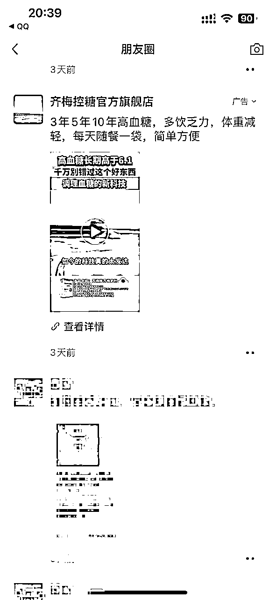

来源：https://bnb422zi7t.feishu.cn/docx/NMdlddS0hoAAI4xBMLXcZyzFnGg
大家好，我是 layman，一个普通打工人，生财潜水老玩家。这次想跟大家分享我怎么从 AI 小白到用 AI 数字人跑广告消耗，4 天跑了 30 万广告消耗的一个经历，第一次发帖，文笔不好，见谅哈。
一切的起源在我新入职了一家传媒公司，主要客户是各大药企，我们这个行业是属于信息流投放，主流的投放平台分别是下面这几个：
腾讯：广点通
快手：磁力金牛
抖音：巨量引擎 巨量千川
百度：百斗天枢
我们的投放平台用的是腾讯旗下的广点通，主要是朋友圈，视频号，公众号广告这三个板块投放，其次是 QQ，QQ 浏览器，腾讯视频等等其他板块都会投放。
我属于信息流投放下面的一个分支板块——信息流电商业务，简单来讲就是卖货。
给大家看一下我们平时投放的素材（找的是同行案例），以下分别为朋友圈，视频号，QQ 三个板块。

从写脚本--搭建广告账户--创造计划--文案--拍摄--视频剪辑--投放--视频过审--消耗转化整个流程都是我们部门负责。
平时的话会在后台上传剪辑好的广告素材。
然后选择在这些腾讯旗下的广告版位去投放。
这个就是我日常工作的大致内容。
新人入职，我秉承的原则少说多做，这个品类我第一次接触，面对众多素材无从下手的感觉，剪一个 1-2 分钟的视频三四个小时不止，加上对品本身的陌生，大量的违规和素材修改，这些事情让我的焦虑从一周后就不断放大。
在我快放弃跑路的时候刚好看见亦仁发的小灯塔：如何提升自己的心力？看完之后，我就想着，再坚持坚持，说不定我可以呢？
事情的转机发生在我的运营没对我提要求，只是让我交视频，让我自己自由发挥，我就开始了自己的 AI 数字人的探索之路。
首先：我们每天群里都会发前几日的 TOP 素材表
然后我每天上班第一件事都会打开看一下每天前十的素材参考
研究他们的视频结构，开头目前用的多的爆款元素分别有以下几种：
1、吸睛，新奇特
2、夸张症状+功效或者使用结果
3、数字人视频
4、数字人音频+吸睛画面
中间的基本内容是效果和产品介绍，产品功效，大厂背书+反馈音频和街坊。
结尾基本都是讲活动价格优惠，逼单促下单转化。
看完结构之后，我会对比我自己的品，去用跟他们一模一样的素材和同类素材，实在找不到直接扒爆款的素材去用，还有他们的文案也是一比一的改成我们的品去抄。
抄爆款的同时，我就发现一个异常值 —— 连着好几天基本上前十五的素材多数都是 AI 。下面这个表，是上个月 9 月 29 的 top 素材表，红线框出来的都是AI相关的素材。
这些爆款，要么是纯数字人生成的视频
要么视频里面加了一些比较火的数字人
要么有的开头用的是数字人的音频，
还有克隆比较火的演讲生成的视频再换个脸，画面做上下分屏，照样能爆。
纯 AI 数字人的视频他们的广告消耗，一条一天能跑几万十几万，有的爆款视频里面也会掺杂很多 AI 的素材。
我就想着我自己也是不是能试试，主要是我自己剪视频太慢了，想着模仿爆款，纯生成数字人素材简单又高效，这样我自己效率提升就不焦虑了，果然，懒惰是人类进步的阶梯。
9.26 我开始做 AI 数字人的视频
当时，我连哪个是 AI 软件都分不清。刚开始生成数字人时，我不知道需要断句，每次生成的视频里，数字人说话就像机关枪一样突突突。我只能在剪辑软件里给他降速，但这种视频实际上很差，根本对不上口型。我意识到可能是文案没有断句好，于是反复尝试了好几次。后来，在制作数字人时，我开始一句一句地断句，调整语速，才慢慢生成了一个与爆款类似的数字人视频。
9月29日，我的一个视频开始跑量了，开头是一个俄罗斯数字人（素材是同事帮我生成的）。那时，我还在学习如何生成数字人，而且那天我更不想干了。因为跑量时违规容易被拒，所以我一直在改素材。我们后期的工作量很大，我当时真的怀疑自己的能力，甚至向上司提出了离职。她让我再考虑一下，我就想着等休完国庆假再试试，看看自己还能坚持多久。
休了一个国庆假期回来，我发现的视频爆了！
前三个视频都是我剪的，第一个跑了十五万的就是那个 AI 数字人开头的视频，后来我问了一下运营，她说这是半个月跑的量，我又加了所有我的视频，加起来将近 40 万的消耗，这个时候我才有一丝心安，也安慰自己，这是运气好，国庆流量大，新手保护期等等之类的。
同时也给我打了一针强心剂，增强了信心，我也不菜嘛！！!
之后的时间里，我优化了一下流程，经过 3 天的努力，我已经能生成一个跟爆款一模一样的视频了。
直到 14 号对业绩，运营无意中聊到，才知道那个视频已经跑了 30 万消耗了
这就是我从什么都不懂的 AI 小白到靠一条视频 4 天跑出 30 万广告消耗的整个经历，这中间也有运气的成分吧。
那接下来我给大家讲一下我具体是怎么生成一个 AI 数字人。
我现在目前用的最多的是即创，目前处于免费公测阶段，抖音旗下的，还挺好用的。
首先进入网站后看到的是这个页面，不过这个登录需要有巨量引擎的账号，没有的圈友可以弄一个。
登录进去之后，我们能看到整个页面构成
然后左侧工具栏有个 AI 视频，后面有个数字人成片打开进去
根据自己的使用习惯去操作，我一般是先把写好的文案拷贝进去，千万别这样直接去选数字人和配音去生成，不然你会收获一个跟机关枪一样讲话的数字人。
需要点击如图一左下角的手动拆行编辑，如果手动编辑没亮就先点击帮我写脚本，再点击手动拆行编辑就可以了。

编辑之后，你会看见一行一行的文字，可以增删行，断句就是每句话后面一定要加逗号，我之前就是走到这一步，没加逗号，还是生成机关枪讲话一样的数字人（建议提前在文案里快速加好标点符号断句，这样效率更高，在即创里加断句很卡很慢，费时费力）字幕根据自己习惯可加可不加，我一般都不加的。
发亮的文字是中风险提示，建议修改的，根据自己的发布的平台和品去调整，这样编辑的时候就更方便了，避免违规、
接下来选择自己要用的数字人形象，灵动的更像真人也更火，数据也跑的不错（推荐使用），没有灵动标识的数字人和没背景的灵动数字人可以任意换背景，也可调节大小（这种一般是塑品和逼单的时候用，有时候开头也用，不过还是看视频看场景），但是固定场景下的灵动数字人，背景不能换，大小不能调，大家可以按照自己实际情况去操作。
背景可以选择系统推荐，不过系统推荐都是图片，我的素材可以上传图片和视频作为背景都可以，AI 生成就比较鸡肋了，也有可能我不会训练，对我来说目前系统推荐和自己的素材完全够用了。
最后就是配音了，根据数字人的形象选择合适配音，右侧倍速调节一般都是 1，偶尔可能我会调个 1.1，1.2 及以上太快了，不推荐。
完事后点击播放

先渲染试听一下，试听没问题了
最后点右下角的立即生成就可以了，之后跳转到这个页面，根据视频时长生成的时间也不同，我基本一个 1-2 分钟的视频生成大概需要 3-5 分钟，几句话很快就出来了
这就是生成好的数字人视频
点进生成好的视频，可以先预览一下
点击右侧的选择按钮
下载到电脑文件夹就可以了
这样就生成了一个 AI 数字人的视频素材了
最后再去根据品类去剪辑，我是对标爆款，所以基本是对帧剪辑，不过也是挺简单的
写到这里，想分享一点我对于数字人做广告素材的经验分享。
信息流广告素材目前来看大概分为以下几种：
中间的结构可以随意调整顺序 数字人开头和产品介绍上下分屏+数字人优惠促销+反馈+数字人促销
再分享一些我自己做爆款视频的一些思路：
一、多看同行素材，积累灵感
平时要多关注同行的素材，包括朋友圈、公众号广告和视频号，为自己积累灵感和素材。
如果想轻松跑量，最简单的方法就是复制TOP表单的爆款素材。选择与自己产品贴合的爆款素材，进行结构拆解——开头、中间内容介绍、结尾，分析画面构成，大字标题的位置，我通常直接拆解结构。
如果是数字人视频，就把视频下载下来，用剪映导出文案，根据自己产品适当修改，内容的85%-95%都沿用爆款。产品素材可根据需要添加或不添加，然后在即创中生成与对标素材一模一样的数字人和配音，最后导入剪映，一比一复刻所有细节。这样，一个跑量的爆款视频就制作完成了，可以投放广告跑量。
二、优先选择经过验证的数字人形象
制作数字人素材时，优先选择跑量最多的数字人形象，不要随意按照自己的想法生成。
我之前的一个爆款，第一次复刻时用的不是爆款形象，但效果也不错。第二天我换成与对标一模一样的数字人，结果就直接跑起来了。
也可以换个思路，先用对标的数字人形象，如果效果不理想，再换相似类型热门的数字人形象，可能也会爆。重点是选择已经被时间验证的数字人形象和音频，这种内容起量的概率更高。
三、利用已有爆款，创造新素材
如果自己有跑出的爆款，可以换同等气质的数字人继续投放，或者修改开头，第一句换种说法，又是新的素材，可能成为隐藏的新爆款。
四、重视开头封面，抓住用户注意力
开头封面尤为重要。广告素材与抖音的原理相同，第一眼要抓人眼球。新奇、特别、夸张的素材能吸引用户注意，或者封面标题使用反人性、反常识的文字，也能取得不错的效果。标题需要与人物形象契合，这样用户才有耐心观看视频。
五、深入了解产品，抓住人群痛点
一定要了解自己的产品，抓住目标人群的痛点。改文案时也是如此，根据爆款的素材和文案，延伸到自己的产品上。文案改得越贴合，素材越契合，当感觉对了，爆款就自然诞生了。
最后，我想说，目前来看确实跑广告的素材好多用的数字人，而且数据也挺好的，我一个同事回老家，都能听见家里老人看的视频是我们常用的爆款数字人的声音，所以 AI 数字人目前在广告素材这块，起量的概率还是很高的，未来可期。